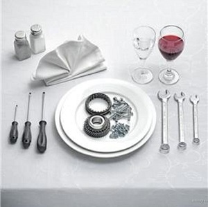

Что и как проверяют при предрейсовом техническом осмотре? Методика проведения предрейсового контроля
Начать стоит с того, что отсутствует законодательно закреплённая методика проведения осмотра автомобиля перед рейсом. Существует только Приказ Минтранса о предрейсовом техконтроле и ссылка на то, что проводится он должен в соответствии с Техрегламентом Таможенного Союза. Однако ни один из приведенных документов не содержит конкретики в отношении того, КАК проводить техосмотр. Соответственно, раз нет методики её нужно изобрести!
Ориентироваться стоит на перечень неисправностей, с которым запрещена эксплуатация, а также на вышеуказанный Приказ.
МЕТОДИКА ПРОВЕДЕНИЯ ПРЕДРЕЙСОВОГО КОНТРОЛЯ ТЕХНИЧЕСКОГО СОСТОЯНИЯ
- Водитель подходит в контролёру и предъявляет ему путевой лист с отметкой медработника о пройденном предрейсовом медицинском осмотре.
ВИЗУАЛЬНЫЙ ОСМОТР
- Далее контролёр:
- узнаёт у водителя, были ли нарекания к работе автомобиля, жалобы на какие-либо неисправности при последнем управлении автомобилем;
- вместе с водителем, начиная от водительской двери, обходит автомобиль, проверяя целостность остекления, и кузова, щёток стеклоочистителя, наличие элементов, предусмотренных конструкцией;
- оценивает чистоту кузова и остекления ТС; при выявлении сильного загрязнения кузова контролёр имеет право изменить запланированный маршрут, направив водителя на ближайшую мойку автомобилей; предварительно удаляет загрязнение со стекол автомобиля ветошью или другим доступным способом;
- визуально, либо с помощью поверенного, сертифицированного оборудования убеждается в отсутствии тонировки стекол, уменьшающей светопропускающую способность ниже допустимого уровня, установленного законом;
- проверяет исправность замков дверей кузова или кабины, запоров бортов грузовой платформы, запоров горловин цистерн и пробок топливных баков (кроме транспортных средств городского наземного электрического транспорта) открывая/закрывая/подёргивая их поочередно;
- один раз в 2-е недели, либо при наличии подозрений на неисправность осматривает подкапотное пространство; при этом отмечает наличие течей/подтёков, крепление крышки маслозаливной горловины, проверяет уровень моторного масла и охлаждающей жидкости, целостность шлангов и элементов двигателя;
- при поочередном открывании дверей оценивает наличие в салоне автомобиля посторонних предметов, представляющих потенциальную опасность в случае резкого торможения, либо ДТП;
- сняв перчатки, через открытую дверь проверяет надежность крепления подушек, спинок и подголовников сидений покачивая их;
- оценивает свободность хода и целостность предусмотренных конструкцией ТС, ремней безопасности, поочередно вытягивая лямки, далее - фиксирует замок, проверяя надёжность фиксатора, покачивает фиксатор, проверяя его надёжность, а также крепление болтов, далее освобождает язычок замка из фиксатора, проверяя работоспособность инерционной катушки; в процессе обратного втягивания ремня, резко натягивает лямку, проверяя исправность стопорного механизма ремня безопасности;
- проверяет исправность, отсутствие зазоров и люфтов в механизме тягово-сцепного устройства, страховочных тросов (цепей), держателя запасного колеса (кроме трамвая), фиксаторов транспортного положения опор полуприцепов (при наличии вышеперечисленного);
- определяет наличие заднего защитного устройства, грязезащитных фартуков и брызговиков;
- при этом, обходя автомобиль, проверяет остаточную глубину протектора всех шин при помощи штангенциркуля, либо специальной линейки; оценивает равномерность износа шин
- оценивает доступные для визуального осмотра части колеса на предмет повреждений (грыжи и порезы покрышек до корда, трещины и дефекты колёсных дисков и т.д.), наличие всех колёсных болтов; в случае наличия "секреток" колёсных болтов убеждается в наличии ключа к ним в автомобиле;
- проверяет соответствие типоразмеров покрышек установленным заводом-изготовителем требованиям;
- оценивает соответствие типа покрышек сезону, установленным законодательством нормам и фактической погоде;
- после монтажа-демонтажа колёс, а также при наличии жалоб водителя на ход автомобиля проверяет затяжку колёсных болтов;
- проверяет давление в шинах при помощи метрологически поверенного манометра, соответствующего предполагаемому нормальному давлению в шинах;
- просит водителя предъявить для осмотра огнетушитель, аптечку (несколько аптечек/огнетушителей, если предусмотрено типом ТС) с читаемым сроком годности, и знак аварийной остановки и противооткатные упоры (для грузовиков и автобусов);
- в осенне-зимний и весенний периоды также просит предъявить емкость с достаточным запасом (не менее 4-х литров) стеклоомывающей жидкости с незамерзающими свойствами, соответствующими погодным условиям;
КОНТРОЛЁР В АВТОМОБИЛЕ
- Контролёр снимает перчатки и получает ключ автомобиля от водителя, если не предусмотрено хранение ключей ТС у контролёра;
- в присутствии водителя, оставив открытой дверь автомобиля, занимает место за рулем транспортного средства;
- включает стояночный тормоз автомобиля;
- убеждается, что коробка передач переведена в положение "Нейтраль" для автомобилей с МКПП, либо в положение "Р" для автомобилей с АКПП;
- включает зажигание, внимательно наблюдая за лампочками-индикаторами на панели приборов;
- заносит в путевой лист показания одометра;
- заводит автомобиль, прислушиваясь к работе двигателя; посторонние звуки (музыка) при этом должны быть исключены;
- индикаторы на панели приборов, сигнализирующие о неисправностях, влияющих на безопасность дорожного движения должны потухнуть; если индикаторы неисправности тормозной системы, рулевого управления, системы нейтрализации отработанных газов, а также систем безопасности изначально не загорались, то такой автомобиль не может быть выпущен на линию до устранения неисправности сигнализирующих систем;
- убеждается, что индикатор системы вызова экстренных оперативных служб (если установлена) светится зеленым цветом;
- проверяет наличие и работоспособность тахографа (если обязательность его установки предусмотрена законодательством Российской Федерации) и аппаратуры спутниковой навигации (если обязательность ее установки предусмотрена законодательством Российской Федерации);
- убеждается, что обзорность с места водителя, а также обзорность зеркал заднего вида сохранены и не закрыты посторонними предметами;
- проверяет крепление зеркала заднего вида покачивая его;
- проверяет исправность обдува лобового стекла, увеличивая и уменьшая интенсивность работы вентилятора обдува с помощью элементов управления на панели приборов;
- несколько раз нажимает на педаль тормоза до упора, проверяя ход педали; в случае, если конструкцией транспортного средства предусмотрена пневматическая тормозная система - на 10-15 секунд выжимает педаль тормоза и оценивает отсутствие значимого дальнейшего хода педали;
- глушит двигатель, извлекает ключ из замка (если предусмотрено конструкией) и выходит из автомобиля;
- предает ключ водителю, требуя от последнего выполнить последующие команды;
ВОДИТЕЛЬ ЗА РУЛЁМ
- Водитель занимает место за рулём, закрывает дверь автомобиля, заводит его и опускает стекло водительской двери, чтобы слышать команды контролёра;
- Контролёр просит водителя выжать педаль тормоза, после того, как автомобиль был заведен, и при помощи зеркала, установленного на телескопической штанге, обходит автомобиль, оценивая доступные для осмотра элементы тормозной и выхлопной систем на предмет утечек; оценивает цвет выхлопных газов; появление выхлопных газов сизого, тёмного цвета, либо повышенная дымность являются поводом провести более глубокую диагностику в условиях специализированного автосервиса;
- при наличии манометра пневматической тормозной системы - оценивает его показания;
- просит водителя отпустить педаль тормоза и несколько раз отрывисто и несильно нажать на педаль акселератора с целью оценки работы двигателя на повышенных оборотах;
- не реже 1 раза в месяц, либо непосредственно после ДТП, ремонта рулевого управления, смены покрышек, монтажа/демонтажа колёс, а также при возникновении жалоб у водителя определяет люфт рулевого колеса с помощью сертифицированного люфтомера, либо специальной линейки; в последнем случае устанавливает линейку-транспортир на рулевое колесо и просит водителя медленно повернуть руль вправо/влево, останавливая его при начале поворотного движения колёс и снимая показания с линейки; далее полученные значения суммируются и оцениваются в соответствии с установленными нормами;
- просит водителя энергично повернуть руль вправо и влево до упора, оценивая наличие посторонних звуков и работу усилителя рулевого управления (если предусмотрено конструкцией ТС);
- встает перед автомобилем;
- просит водителя однократно и коротко нажать на соответствующую область руля, с целью вызвать звуковой сигнал;
- просит водителя воспользоваться стеклоомывателем и стеклоочистителем в разных режимах;
- просит водителя включить габаритные огни и ближний свет, если они не включены, проверяет исправность всех световых элементов дневных ходовых огней (если предусмотрено конструкцией ТС);
- просит водителя коротко включить и выключить дальний свет;
- просит водителя поочередно включить правый и левый указатель поворота;
- обходит автомобиль и просит водителя включить и выключить сигнал аварийной остановки, оценивая исправность задних световых сигналов и повторителей;
- просит водителя нажать на педаль тормоза, проверяя исправность тормозных сигналов;
- если при контроле не выявлены неисправности, с которыми запрещена эксплуатация, в путевом листе ставится отметка "контроль технического состояния транспортного средства пройден" и подпись с указанием фамилии и инициалов контролера, проводившего контроль, даты и времени его проведения
ЗАКЛЮЧИТЕЛЬНЫЕ МЕРОПРИЯТИЯ
- если при контроле не выявлены неисправности, с которыми запрещена эксплуатация, в путевом листе ставится отметка "контроль технического состояния транспортного средства пройден" и подпись с указанием фамилии и инициалов контролера, проводившего контроль, даты и времени его проведения; после получения отметки водитель указывает в путевом листе время выезда и отправляется в рейс;
- при выявлении неисправностей, с которыми запрещена эксплуатация, решается вопрос о возможности устранения неисправности "на месте", либо направлении на СТОА; информация передается диспетчеру и специалисту по безопасности дорожного движения (при наличии в штате); выезд автомобиля, не прошедшего предрейсовый техконтроль, на дороги общего пользования, даже с целью добраться до СТОА запрещен; доставка такого автомобиля на СТОА должна проводиться специализированными эвакуаторами, либо буксировкой, если это приемлемо;
- в журнал Регистрации результатов предрейсового технического контроля вносится запись о проведенном техосмотре;
- в случае выявления неисправностей заполняет заявку на ремонт и делает запись в журнале учёта выявленных неисправностей.
Представленный регламент проведения предрейсового технического контроля не может претендовать на исключительную полноту и безошибочность, однако его вполне можно использовать, как ориентир при формировании, например, положения о предрейсовом контроле. При использовании на других ресурсах в сети интернет, просьба указывать ссылку на первоисточник - https://предрейс.рф
